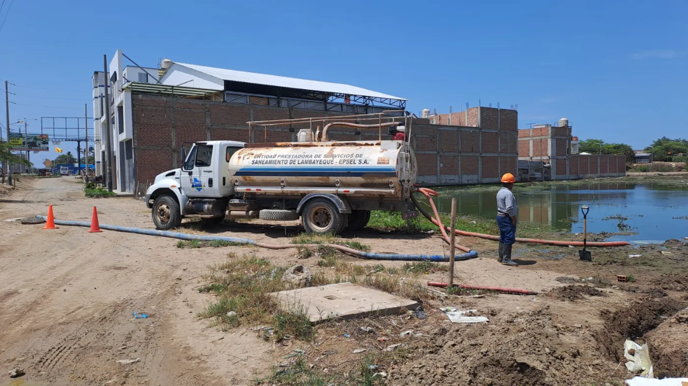

¿Pasa hoy la cisterna?
Donde la red no llega, EPSEL lleva el agua en camiones cisterna. Busca tu zona y mira qué día, en qué turno y qué cisterna te toca.

La cisterna esta semana
Cargando las visitas…
Ver solo un distrito
Cargando las visitas de cisterna de los próximos 7 días…
Cumplimiento, litros repartidos y mapa de sectores en el panel de AguaYa
Cuando llega la cisterna
-
Fíjate en la placa
Cada visita de esta página dice qué cisterna te toca. Si llega otra o no es de EPSEL, avísanos.
-
Ten tus baldes limpios y con tapa
Lávalos antes con agua y jabón, y tápalos apenas los llenes para que el agua no se ensucie.
-
Te tocan al menos 80 litros por casa al día
Es el mínimo que fija SUNASS. Si la cisterna viene cada dos días, te corresponde lo de esos dos días.
-
Si te piden dinero o la cisterna se desvía, denúncialo
Puedes hacerlo sin dar tu nombre. Tu aviso ayuda a que el agua llegue a toda tu zona.
¿No pasó la cisterna?
Cuéntanos tu zona y el día. Lo revisamos con el recorrido de la cisterna.